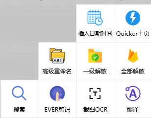
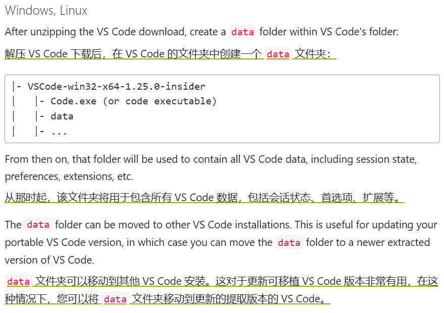
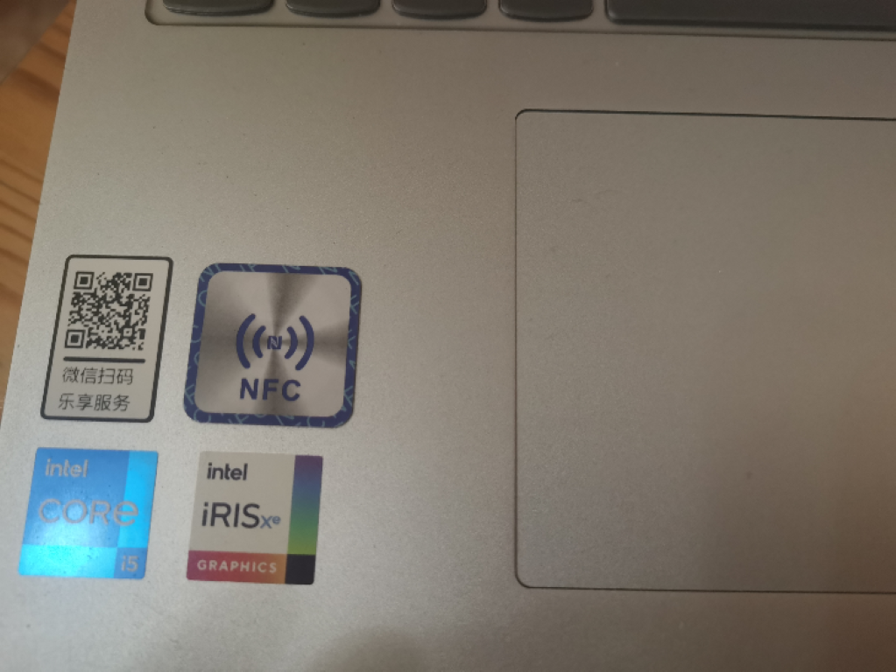
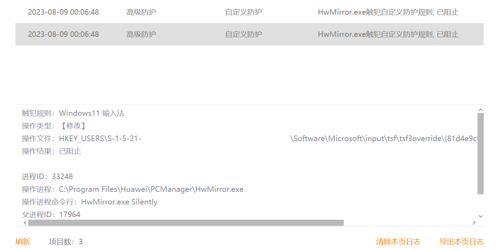

使用 Windows 软件集合
这里的软件包括安装程序安装的软件，便携绿色版的软件及工具性软件。
同时我的安装包集合只是为了指示可以考虑这个软件，而非一定要安装此版本。
以下软件如果使用了 crack 版本，将在软件名称后用 © 标识。如果已启用，但又没有删除，用 † 标识。
不提供软件安装包及 crack 版本。以下全部链接都来自可信网址（大部分是官网）。
本文图片不进行更新，请以文本为主。主要是为了避免 .git 爆炸。
你问我为什么不用 Git LFS？因为 LFS 数额有限嘛，省着点比较好。其实是因为试着加了一些没成功，于是放弃了。
为避免引起误解，已经移除了大部分显示文件夹内容的图片（即使没改动也移除了）。
正所谓「工欲善其事，必先利其器」，软件便是重要的器。本篇博文便简单介绍我电脑上的软件。
我软件安装的方式是安装包手动安装，winget 等包管理器安装的安装方式还没进行过探索。
我的软件安装包集合分为三个部分，Mandatory, Optional 与 Tool，分别代表「必装」「选装」和「工具」（后面还添加了一个 Rogue 收藏一些可能会用上的流氓软件装在沙盒，但本篇不讨论）。前二者分别有个 _Portable 的子文件夹，意为便携绿色版。
有的软件后面装了但是没有计入（比如 Adobe Acrobat PDF），而且分类有的比较重合，不过问题不大。
让我们开始吧。
必装
7-Zip
7-Zip 作为压缩软件。以前用的是 WinRAR ©，但是一思索才知道其实用不上。WinRAR 有而 7-Zip 没有的应该就是恢复卷了，但是我从来没用过这个功能，再加上用 © 终究是不安心，于是就拥抱开源了。
7-Zip 还有一个分支版本 ZSTD，我笔记本选择了原版，老台式电脑选择了 ZSTD，最后都选择了 ZSTD。还有一个 NanaZip 基于 7-Zip，并对 Windows11 进行了适配，我没有试过。
由于 7-Zip 图标实在是太原始了，我都对图标进行了更换，有所好转。
还包括 Codecs-x64.7z，是 Codecs 文件，按照 ZSTD 文档进行了配置。
AutoHotkey
AutoHotkey 是一个脚本软件。没什么好说的，个人需求所以必装。由于只学了一点 v1，而 v2 已经出正式版了，所以两个都装目前大部分脚本都迁移到 v2 了，不过有部分脚本（例如复制别人的）还停留在 v1，因此还是两个都装。
C/C++
没写过 C/C++，但是大学要学，环境得配。第一个看网上有说在 SourceForge 下载，但是我在 WinLibs 下载的比在 SourceForge 下载的领先好几个大版本，看到有人评论说不要去 SourceForge 下载，但很多 2022 的教程还是如此。CMake 语法太抽象了，不打算学，有机会去学学 xmake。
火绒
里面有 ShanWall 和 Tencent，是我装的一些规则，用以保护隐私与简单防护。当然关掉了一部分免得打扰。
还有后面额外手动添加了一点规则。比如下面这个禁用了 WeChatAppEx，这个占用挺多内存，而且偶尔 CPU 占用率飙升，而这个是用来弄公众号等内容显示的，权衡之下还是禁用了。
1 | { |
火绒其实可以不装，因为 Windows Defender 就足够了。不过我装火绒是为了它的一些功能：
- 弹窗拦截
- 规则拦截
- 行为拦截
- 查看占用
- 粉碎文件
- 右键管理
- 启动管理
更何况它还很安静，比较不错，没指望它真的能让我电脑百毒不侵。最强的杀毒就是避免接触毒。
当然它上面功能还是有些缺陷：
- 规则/行为拦截弹窗太多（当然这与火绒无关，是我加了规则的原因）
- 查看占用程序不完全
- 粉碎文件失败
- 右键管理凌乱，不知道所属
但总的来说还是够用的。
PotPlayer
PotPlayer 是一个视频播放软件。其实这是三个不同的软件，只是 LAVFilters 和 madVR 我不会单独装，都是和 PotPlayer 一起装的，因此列在一起。
同时因为它诡异的配置方式，导出来的是注册表，配置在注册表里，还有据说开始有广告了，我一度想过替换掉它，尝试过 mpv，但是最终还是放弃了，还是 GUI 设置这种配置方式对我这种小白比较友好。同时我还在配置时遇到两个问题：
- 无法载入副字幕
- 画面问题（比较笼统，我也忘记了）
最终还是回归了 PotPlayer，不过以后有机会也许还会再尝试一下的。
PowerToys
PowerToys 是一个 Windows 工具箱。
我用到的功能有：
- 始终置顶：这样就去掉了我 AutoHotkey 脚本的一行
#a::WinSet AlwaysOnTop, , A，同时还有边框与声音提示，功能增强。 - 唤醒：用来防止待机，有时有啥事不想熄屏就开这个。
- 颜色选择器：这个 Snipaste 也可以，不过 PowerToys 可以提供的类型更多，而且更美观。
- 窗口裁剪器：用过几次，使用场景是用 Adobe 把 PDF 转 PNG 时，裁剪一小块看进度，然后先去干别的事情。
- 环境变量：由于最近没有修改环境变量，没怎么用过。窗口美化了一下吧，其实感觉没啥差别。
- FancyZones：虽然开着但没用过，用处似乎挺大，不过我确实还没找到应用场景。
- File Locksmith：怎么说呢，有的火绒查不到的它查得到，火绒查得到的它查不到，留下来互补。
- 文件资源管理器加载项：用来在文件资源管理器预览，也是虽然开着但没用过。
- Hosts 文件编辑器：也许可以用这个更优雅地编辑 Hosts？不过我已经很久没改过 Hosts 了，也是开着没用过。
- 图像大小调整器：
好用，绝，不多说，省空间啊！由于已经使用 FFmpeg 压缩了，已经不怎么使用这个功能了。 - 鼠标实用工具：开了「查找我的鼠标」，但也感觉用处不大。
- 速览：快速预览，应该是很好用的功能，不过现在似乎还有些不成熟？也没怎么用过，对我而言似乎用处不大。
- PowerRename：可以替代一些命名工具，但是功能还不够强大，以前我都是用 Everything 重命名的，PowerRename 可以改善一点体验，但是功能还是要再强大一点才行。（下面说关掉了，后来又开启了，二者适用场景不太一样，平常一般用 Everything，特别情况用 PowerRename，复杂的就还是写脚本吧）
- 8 月 26 日更新：不如 Everything，Everything 选择一群文件后会把原规则给你写出来，只用稍微改一点就好了，更方便，因此关掉了 PowerRename。
- PowerToys Run：太棒了的功能，以前也有听过 uTools 之名，真正用上了同类工具才知其爽。当然现在功能还是太弱了，不过期待它的发展。
- 快速重音：应该是蛮有用的功能，但是触发机制有点诡异，我练了几下才能稳定。以前输入音标都是直接输字母，然后从自定义短语选的，这个也许能改变一下。有点奇怪的是我选的拼音字符集但还有一些奇怪的符号
ɑɑ̄ɑ́ɑ̌ɑ̀（我发现了，这是手写体，然而我一直用的是印刷体aāáǎà），同时功能也太弱了，不能自定义，不过我看到有人提相关 issues 了，期待前景。 - 注册表速览：可以用来看
reg文件改了啥，不过注册表不能用这个打开，到 Windows11 了注册表还是那么复古。 - 快捷键指南：功能还是太少了，而且还是英文的，不过也看到相关改进 issue 了。
再补充一下 PowerToys Run 用的几个插件，按字母顺序排列。
CliboardManager
ClipboardManager 用来管理剪贴板历史，但好像只显示 6 个，而且我使用频率不高，一般也直接用 Win + V 了，所以也没怎么用过。
Edge Favorite
Edge Favorite 用来搜索 Edge 收藏，今天（2024 情人节）重构了收藏夹结构，更简洁且有逻辑性的同时也让选择变得困难，因此以后可能会开始使用这个插件。
Everything
Everything 用来搜索文件，基本上用于要比较迅速而且比较简单的场景，比较复杂以及一般的场景还是会用 Win + F 直接用 Everything。
GEmojiSharp
GEmojiSharp 用来搜索 Emoji，但其实我也用得不多，不过倒也不是没用过。
TOTP
TOTP 用来显示双因素认证（2-Factor Authentication）的验证码。
PowerTranslator
PowerTranslator 是基于有道翻译的翻译插件，也是我最常用的插件了。平时想迅速翻译或者查一个词的意思时就会用到（查词虽然可以用 GoldenDict，但是太充实了，我大部分只是想简单看看释义罢了）。当然有道翻译质量比较差，一般结果不尽人意时还是得去打开 Google 翻译，不过查单个词还是够用的。
已经弃用了 TIM，改用 QQNT，使用体验还是非常不错的。
而且随着 LiteLoaderQQNT v1.0.0 的发布，我也终于不用一直在 9.9.2-16183 版本了（现在已经是 9.9.7-21173 了，前段时间更新完发现变化不少）。
LiteLoaderQQNT 的插件就懒得介绍了，而且记得某个插件还说不要分享显示出使用了该插件的截图，所以就不介绍了（其实是懒得写了）。
不过有几个插件没能成功加载，但因为使用不频繁，也就作罢了。
Wolfram
包含 Mathematica© 和 WolframEngine。
Mathematica 包含了本体（Windows 和 Linux）及中文语言包。
虽然我装的是 ©，但是南大买了软件，所以其实我是可以去掉 © 的。
Mathematica 是一款功能超强的数学软件，大一上学期对微积分和线代的作业完成起到了不可替代的重要作用。
DevToys
DevToys 号称「开发者的瑞士军刀」。我还没怎么用过，不过里面一些功能我觉得还是不错的，随便看几个：
- 时间戳
- 进制转换
- 编码解码
- 生成 UUID
Anki
Anki 是一个 Flashcards 学习记忆软件，大学还在用它。
Calibre
Calibre 是一个电子书管理软件。但其实我需要的只是一个电子书阅读器，这一点没找到令人满意的，出于 Calibre 的受欢迎，而选择了它，不过电子书阅读效果还是不够好。
DevSidecar†
DevSidecar† 是一个 GitHub 加速器。由于已经使用了 Clash，不再使用了。
Docker
Docker「是一个开放源代码的开放平台软件，用于开发应用、交付应用和运行应用」。目前我只用来弄 DEC，但是还是比较重要的，因此列入了必装。
draw.io
draw.io 是一个流程图绘制软件，不过我高二时主要拿来画电路图。
EasyConnect
EasyConnect 是一个 VPN 客户端软件，寒假期间在校外要上校内网站，就得用这个了。
然而我早在入学前的暑假有幸看到了学长一个视频「转发给你的同学看看 如何应对与卸载删除它？有什么替代方案？」
然后我不慎安装了，确实难卸载，于是采用了 Docker 方案 ，不过跟视频里采用的方案不同，我看着网上的教程，用了 WSL2。要不是要短信验证码就可以纯命令行了。
EasyConnect(Docker + WSL2).txt 就是一行命令
1 | sudo docker run -d --name DEC --device /dev/net/tun --cap-add NET_ADMIN -ti \ |
这也是我第一次用 Docker，好不容易才摸索弄好。
这是在 WSL 里 Ubuntu 的命令，我命名这个容器为 DEC，分配端口 32890 给它，指定使用 7.6.7 版本的 EasyConnect。然后后面我就可以用下面的命令来开启关闭了。
1 | sudo docker start DEC |
也可以直接在 Windows 运行，去掉 sudo。
这个装了好久，一直失败，即使是加了阿里镜像也失败（Hello World 就可以），后面我关了代理就好了，也不知道是不是这个原因（估计是，后面在南京重装了一次又出现了这个问题，当时忘了上次咋解决的，后面又一次摸索出来了）。
Everything
Everything 是一个 Windows 文件搜索软件，Windows 最强搜索软件。为了它我把已经存了一部分文件的 exFAT 格成了 NTFS。
不过前几天遇到个问题，开了 WSL 后想用 Everything 追踪 WSL 文件变化，然后发现任务栏每隔 30s 会被激活一次，经过测试我才发现是 Everything 「尝试监控变化」选项的原因，我调整了数值也没有改变，只好关闭了这个选项，一开始我还以为是 TrafficMonitor 的锅准备写 issue 了，万万没想到是它导致的。
GeoGebra
GeoGebra 是一个数学绘图软件，我主要用来画函数图。
Git
Git 是一个免费的开源分布式版本控制系统，不得不装的必装。
Vim
Vim 是一个文本编辑器，现在我就是用它来写 markdown。可惜的是就在前几天（8 月 3 日）作者 Bram Moolenaar 已经撒手人寰了。它有个知名 fork 项目 NeoVim，也许等它稳定后我就会切过去了。
R.I.P. Bram Moolenaar
Honeyview
Honeyview 是一个图像查看器。
有意思的是我曾经用过它家 Bandisoft 的压缩软件 Bandizip 和 GIF 录制软件 Honeycam ©，而后者说起来还有一段历史呢~后来因为 Bandizip 收费了，转向了 WinRAR ©，再后来就是 7-Zip 了。
当然我对 Honeyview 也有诸多不满：例如它不支持设置导出，再比如说一些格式它不支持。只不过我对图像查看器要求比较低，而且也不知道有什么好的替代品，就先暂时用着了。
Internet Download Manager ©
Internet Download Manager 是一个下载器，除了不支持种子和磁力链接外完美。
Node.js
Node.js 用来配置 JavaScript 环境。
Python
Python 用来配置 Python 环境。
qBittorrent
qBittorrent 用来下载种子和磁力链接。
Quicker†

Quicker† 用来做一些快捷动作。因为没怎么用了，禁止了开机自启，但是还没卸载。
装了几个动作：
- 搜索：类似 PowerToys Run 的搜索，因为 Run 还没实现多搜索引擎，用这个替代。
- EVER智识：智能搜索。
- 截图OCR：我的 OCRC 还是有点缺陷的，跟这个配合使用。
- 翻译：这个我没实现，因此用用。
- 高级重命名：没试过，也许能有用。
- 一级解散 & 全部解散：解散文件夹，用过几次。
- 插入日期时间：快捷插入日期时间，不过不能自定义配置，我只好改源码了，不知道会不会更新覆盖掉。
我还试了下「公式识别」动作，我感觉就是我的 OCRC 完胜：
- 多种类型公式复制选择
- Click2Clip 功能
- 界面简洁易用
除了不支持预览外可以说是完美了。我看了下那个公式识别，实在是不方便，不过它有个优点就是可以修改，变预览边改，虽然我觉得没啥用。
Sandboxie-Plus
Sandboxie-Plus 是一个沙盒软件。用了一下还不错，想拿迅雷下一下死种，又不想它乱搞，Sandboxie-Plus 就派上用场了。
ScreenToGif
ScreenToGif 是一个录制 GIF 的软件。
话说我没装录屏软件，本来有一个的，但它停止更新了我也就弃用了，毕竟也不常用，没错就是 Capture。
SumatraPDF
SumatraPDF 是一个 PDF 阅读器。
以前也用过 Adobe Acrobat ©，但是后来发现 PDF 修改功能并不需要，我主要用的只是阅读功能罢了，就弃用了。
TeX Live
TeX Live 是装来配置 环境的。使用镜像源（清华镜像）安装，安装文件 texlive.iso。不过我已经在 WSL 弄好了 环境，其实 Windows 没啥必要，但我还是装了，以防万一，以后空间要是不够了再卸载。
微信
微信 是我见过最烂的社交软件，即使是 QQ 都好过它一万倍，最让人痛恨的就是大家都在用，我也不得不用。
之前（高一好像）也用过一段时间 Telegram，体验确实比微信之流好太多。然而我的号由于是国内手机号注册的，在卸载后就找不回来账号了。
Visual Studio Code
Visual Studio Code 是一个代码编辑器。高一高二用的都是 VSCode，高二末转了 Vim。但是 Vim 连皮毛都没学成，因此 VSCode 还是得用。其实 VSCode 挺好用的，我转 Vim 的主要原因是为了 UltiSnips，还写了很多被别人称为是「a little bit out of scope」的 snippets。

有一张图片 portable_mode.jpg，是 Portable Mode 开启方式：即创建 data 文件夹。
2023 年 8 月 11 日更新
增加了两个文件 Update.bat 与 VSCode.reg，内容如下。（不放 Admonitions 里，防止代码渲染错误）
1 | echo $computer="%cname%" > "%temp%\VSCode_Update.temp.ps1" |
1 | Windows Registry Editor Version 5.00 |
众所周知 VSCode 便携版无法自动更新，同时右键也没有对应诸如「用 VSCode 打开」的选项。这两个新增的文件就是为解决这两个问题而诞生的。
代码是在网上东拼西凑找到，并且达到了我非常满意的效果。
第一个需要在 VSCode 目录创建 Update.bat 并加入上面的内容。需要更新时双击运行即可，实现了半自动。（也可以加入定时任务定时检查更新，但是如果正在使用可能会出现问题）
同时还需要 7-Zip 支持，并将其加入 PATH。原代码使用 Windows 自带解压，但我在 Windows11 测试发现解压速度奇慢无比，下载压缩包用了 5s，解压用了 100+s，比 Windows10 慢多了。于是我寻求使用 7-Zip 并最终成功，现在解压用时不超过 10s。我刚刚测试了一下，只需不到 15s 就能完成一次更新，速度快到飞起。
同时也不需要下载压缩包了，连安装的功能都实现了。以后只需要将 Update.bat 放在 Microsoft VS Code 目录，双击运行就能安装好。
警告
请勿在有重要文件的文件夹中双击 Update.bat，它会在下载完安装包后清除除 data, Update.bat 和 VSCode.reg 外所有文件与文件夹，且无法撤销。
第二个需要将 D:\\Program Files\\Microsoft VS Code\\Code.exe 改为自己的 Code.exe 所在地，然后加入注册表即可。我将其放在了 VSCode 目录里，因此在 Update.bat 的排除列表里也加入了它。这样就能 VSCode Everywhere 了。
GoldenDict-ng
GoldenDict-ng 是一个字典软件。Fork 自 GoldenDict，GoldenDict 几乎已经停止开发了，论坛和网站都已经差不多（？）死了。而 GoldenDict-ng 大概是所有 forks 中最有影响力的一个，作者开发很勤快，而且还是中国人，在 FreeMdict 论坛也会解答问题。
Bulk Crap Uninstaller
Bulk Crap Uninstaller 是一个卸载工具。在网上找了找，比较有名的免费开源的，也只有它了，好不好用我也不好评价，但是比自带卸载程序卸载和控制面板卸载应该还是要好的。不过我看到 GitHub 写着在「Looking for maintainers」，可能未来不太妙。
Clash
Clash for Windows 是一个代理软件。这个链接已经打不开了，因为作者已经删库跑路了，我现在用的就是网上备份的最新版。
FFmpeg
FFmpeg 是音视频类的软件，也是其他软件的重要组件。用过它把 mkv 转为 mp4。
ripgrep
ripgrep 是一个正则表达式查找工具。用以和 Vim 插件 LeaderF 配合，同时也可以直接在命令行使用（只不过我没用过）。
showKeyBoard
showKeyBoard 是一个用来统计键盘鼠标数据的软件。
Snipaste
Snipaste 是一个截图 & 贴图软件。免费版功能足矣，暂时没找到很好的免费替代品。
TrafficMonitor
TrafficMonitor 用来在任务栏显示上传下载网速、CPU 利用率和内存占用率。甚至还能统计历史流量。
选装
华为电脑管家
因为用的是华为手机（荣耀 V30），尽管笔记本是联想，但还是眼馋多屏协同和一碰传。结果还真有相关教程，于是我的笔记本变身成为 MateBook D(2018)。

然后还买了个 NFC 贴纸真正实现一碰传。唯一的缺陷就是抗金属贴纸比较厚，有点不协调，但是要贴在金属面也只好如此了。
不过有时不稳定，连接手机、多屏协同、查看文件全部失败，有时多试几次就行，有时重启电脑就可以了。前几天重启电脑、重新安装（一开始不是用这个心情助手安装的，用的是一个开源软件）都不行，最后是重启手机才好的，希望是手机的问题吧，未知的问题才是最可怕的。
里面的 UNTESTED 提示这个文件夹内都是未经测试的，像那个驱动我也是网上随便找的，试过也没啥效果，但还是留着了。
另外华为电脑管家会篡改 Windows11 输入法，会强制打开兼容模式。我在网上搜了一下才发现是它的问题。

我也不知道为什么它在那里拼命改。解决方案就是火绒自定义规则加两条。
1 | HKEY_CURRENT_USER\Software\Microsoft\input\tsf\tsf3override\{81d4e9c9-1d3b-41bc-9e6c-4b40bf79e35e}\NoTsf3Override2 |
不过自从升级到 HarmonyOS 4.0.0 后，就没有多屏协同失败的问题了，即使出现，一般再试一次也可以了。
Aegisub
Aegisub 是一个字幕编辑软件，有时用来简单修改字幕。
PowerDVD ©
PowerDVD 是一个影音播放软件。用来尝尝鲜蓝光菜单。笔记本没装。
Go
Go 用来配置 Go 环境。因为不用 Hugo 了可选装。
Ghostscript
Ghostscript「是 PostScript 语言和 PDF 文件的解释器」。用以使用 MaTeX。
JetBrains Toolbox
JetBrains Toolbox 用来安装 JetBrains 全家桶。由于我现在逐渐迁移到 VSCode，因此只是选装。当然我其实还是必装，因为考试用 VSCode 不方便，还是得用 CLion。
Pandoc
Pandoc 是一个标记语言转换工具。或许将来有用，现在没什么用。
mkvtoolnix
里面包含 mkvtoolnix 和 gMKVExtractGUI。用以处理 mkv 文件。
本来极度依赖 GUI，到处找 GUI，结果批量处理时用了一下命令行，感觉真爽，还有中文 help，真是爽上加爽啊。但还是留了一个 mkvextract 的 GUI，对单独的文件简单看看，不过确实也没什么必要留着。
Android Develop Bridge
Android Develop Bridge 是用来调试 Android 的工具，我有时用来卸载系统应用或给应用提权。
FastStone Capture ©
FastStone Capture 是一个截图 & 录屏软件。据说功能强大，没有实际用过。
Hugo
Hugo 是一个基于 Go 的博客构建工具。现在暂时不用，放在了 Option。
微力同步
微力同步 是一个局域网同步工具。由于 Anki 同步媒体速度太慢，我关掉了媒体同步，并按照叶大的教程使用微力同步同步 Anki 媒体文件。不知道现在 Anki 媒体同步是否有改善。
waifu2x-caffe
waifu2x-caffe 是一个图片放大工具，我目前的 QQ 微信头像就是用它来放大的。
Zeal
Zeal 是一个离线文档阅读器，安装了挺多文档，但我没看过，很大一个原因是因为我还没有离线场景，有需要都是直接去看网页，而且全是英文看得我头大。
工具
SubtitleFont
包括 ListAssFonts 和 SubtitleFontHelper。字幕字体相关，用以「查找字幕文件所需字体」与「自动加载所需字体」。
Office Tool Plus
Office Tool Plus 用来部署 Office。
Sysinternals Suite
Sysinternals Suite 是微软的一套系统工具，包含比如 Process Monitor 等工具（只提这一个是因为我只用过这一个）。
图吧工具箱
图吧工具箱是一个工具箱，用来查看电脑配置等。